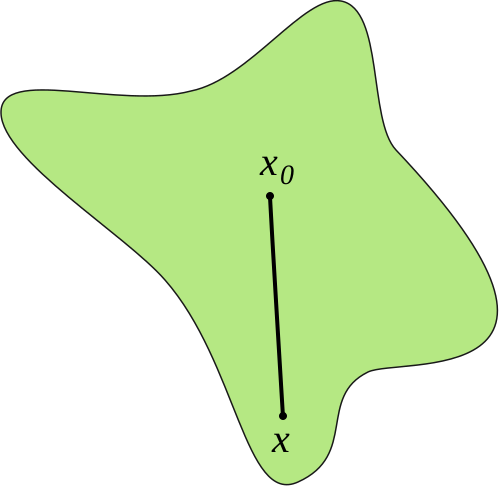

In this post, we will study inductive biases of the parameter-function map of random neural networks using star domain volume estimates. This builds on the ideas introduced in Estimating the Probability of Sampling a Trained Neural Network at Random and Neural Redshift: Random Networks are not Random Functions (henceforth NRS).
Inductive biases
To understand generalization in deep neural networks, we must understand inductive biases. Given a fixed architecture, some tasks will be easily learnable, while others can take an exponentially long time to learn (see here and here).
We would like to understand what training tasks different architectures are (un)able to solve, what kind of solutions they find, and whether they have some shared properties, especially relating to the geometry of the parameter-function map. More precisely, we would hope that properties of neural networks at initialization already determine properties of the network over training. This would enable us to make predictions about the trained network ahead of time. To do this, we built on NRS. We summarize a few hypotheses based on their observations:
- The Neural redshift hypothesis: Popular architectures have an inductive bias toward simple functions, and this can be observed at initialization.
- Complexity of the function represented by a neural net increases with training.
- Extreme simplicity bias leads to shortcut learning, the phenomenon where models learn simpler, but more spurious, features of the training distribution. Thus models which are victims of shortcut learning learn worse or not at all.
Parameter-function maps
Say we have a supervised learning task $f:X\to Y$, where $X$ and $Y$ are finite sets, and a neural network with weights $w\in W$. While the weights $w$ induce a function $f_w :\mathbb{R}^{|X|} \to \mathbb{R}^{|Y|}$, the association $w\mapsto f_w$ is very much non-identifiable, i.e. there are usually many different $w,w'\in W$ that induce the same function $f_w=f_{w'}$ (see e.g. here). The map $w\mapsto f_w$, called the parameter-function map, and has been extensively studied and its properties attributed to the generalization behaviour of neural networks (e.g. here, here and references therein). Thus we can think of the loss landscape as a composition of the parameter-function map and the induced loss function $$ L:W\xrightarrow{p} \mathcal{F} \xrightarrow{L_{\mathbb{F}}} \mathbb{R}$$ where $\mathcal{F}=\{ f_w:\mathbb{R}^{|X|} \to \mathbb{R}^{|Y|} \mid w\in W \}$ is the function space of all possible $f_w$. We stress that the parameter-function map is completely task-independent! It does not take into account the training distribution. In practice, we need to specify a distribution $\mathcal{D}$ to compare and compute metrics related to $f_w$, but these will still be label-independent. For our experiments we tried both uniform distributions and distributions based on the training data, but we did not observe any significant differences.
That said, our choice of metric, or divergence, on the space of functions is somewhat task-dependent. We could choose a simple, task-agnostic metric, like the maximum distance between the outputs of two functions $(f, f')$ on any input $x\in X$. However, this may not be very useful in practice, as it would not take into account the distribution of the inputs, and in some cases it may not even be defined (if the distance between the functions is unbounded). As soon as we have a distribution $\mathcal{D}$ over $X$, we can define a more informative divergence function, the average KL-divergence between the two functions: $$D_{KL}(f_w \mid\mid f_{w'}) = \mathbb{E}_{x\sim \mathcal{D}}[D_{KL}(f_w(x) \mid\mid f_{w'}(x))]$$ This is a measure of how different the two functions are, weighted by the distribution $\mathcal{D}$. It assumes the output of the functions is a probability distribution, but we could also use a different divergence, such as the squared Euclidean distance. While the average KL is data-dependent, it has the nice property that it does not depend on the labels. We therefore use it in our experiments.
Local volume
In the first section we mentioned "the" complexity of a neural network. But there is a large variety of complexity measures (see here, here, and here) with no clear consensus on which one is preferred. In the original NRS paper, the authors used spectral analysis and LZ-complexity. We were excited to replicate and extend their results using the local volume measure introduced in Eleuther's recent paper Estimating the Probability of Sampling a Trained Neural Network at Random. Our underlying motivation for a volume based measure is the basin volume hypothesis (see the paper for details):
Let $A,B\subset W$ be two different regions of the parameter space. Intuitively, we think of them as regions corresponding to different kinds of solutions or behaviours. Then the odds of converging to a solution in $A$ compared to $B$ is roughly determined by the ratio of the volumes of the two regions.
We define each region to be a star domain $W$ such that $\forall w\in W : C(w)< \epsilon $, where $C$ is some cost function.
